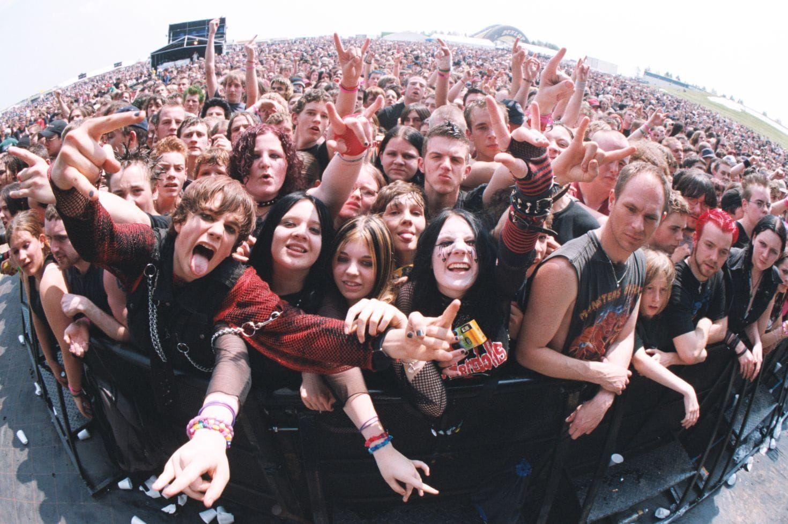

Bienvenido a mi pagina en el cual hablare sobre mi musica favorita.
Es un género musical derivado del rock que nació a finales de los años sesenta
Yo elegi este tema debido a que me gusta este tipo de musica y me gustaria que los demas sepan que es exactamente este tipo de musica.
La importancia para mi es que es mi genero musical favorito, me gustan sus letras, sus vestimentas, el como tocan la guitarra electrica, etc.
Esta es una del genero musical que aun que muchos peinsan que solo gritan o es muy ruidosa, las letras de sus canciones pueden tener un significado profrundo

Que es y Subgeneros
Las 10 mejores bandas del metal
Historia del Metal
El primer acorde: Se considera que el guitarrista Tony Iommi de Black Sabbath inventó el sonido característico del género al usar guitarras muy distorsionadas tras sufrir un accidente laboral en el que perdió las puntas de sus dedos.
El nombre: La frase "heavy metal" pudo venir de la jerga hippie, donde la palabra heavy significaba algo intenso o poderoso.
La literatura: El término fue impreso por primera vez en una crítica de rock escrita por Lester Bangs en los años 70.
Elegi ese tema porque me gusta mucho ese tipo de musica y me gustaria que quienes entren al mundo del heaby metal sepan que hay diferentes tipos de metal, diferentes significados, etc. Lo que mas me gusta de este tipo de musica es que tiene diferentes significados sus letras de las canciones, pueden hablar sobre una historia de fantasia o de mitologia, al igual que hay unas que incluso hablan de amor o desamor como la de "You end I" de scorpions.
Lo que aprendi al investigar de esto es que es divertido y entretenido saber mas hacerca del genero musical que a uno le gusta, mientras uno va leyendo hacerca de su musica, tanto como la historia que llega a hacer entretenido como los datos interesantes que hay hacerca de eso.